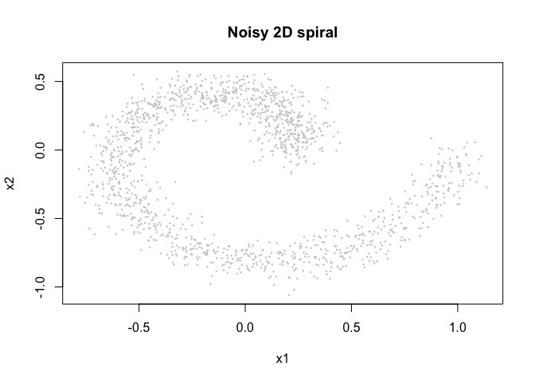
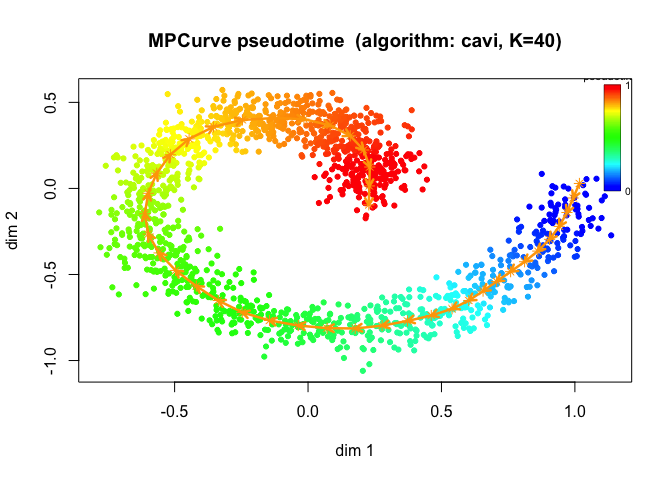
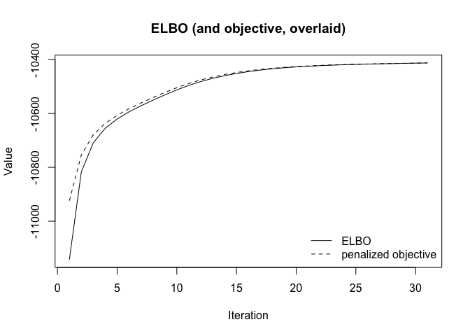
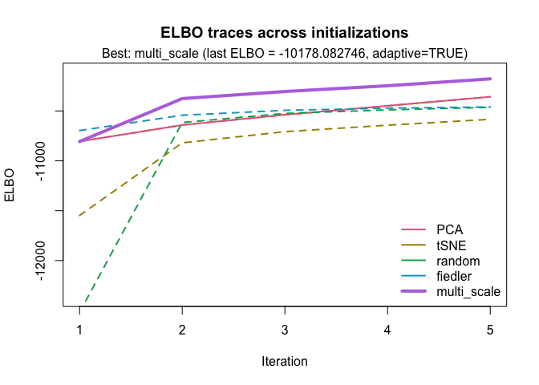
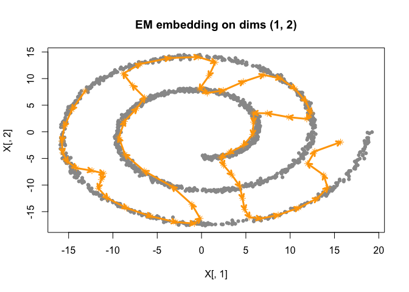
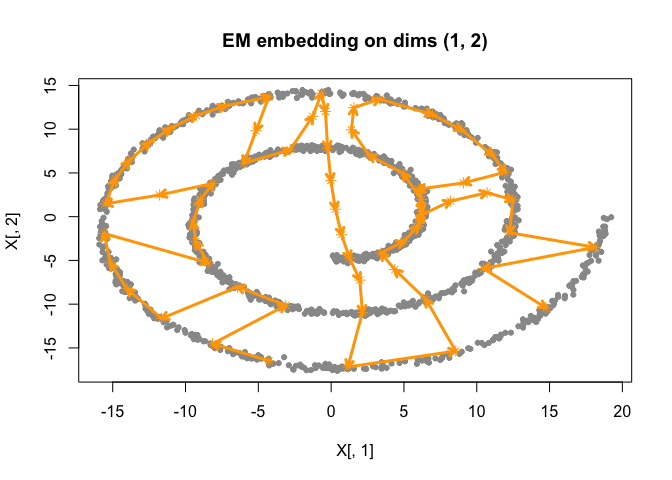
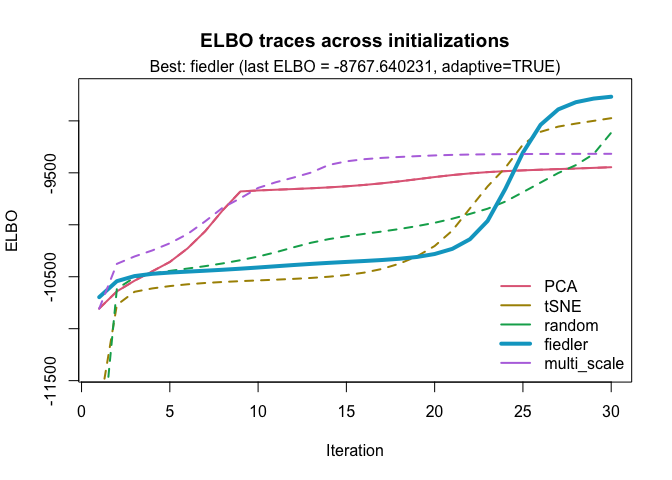
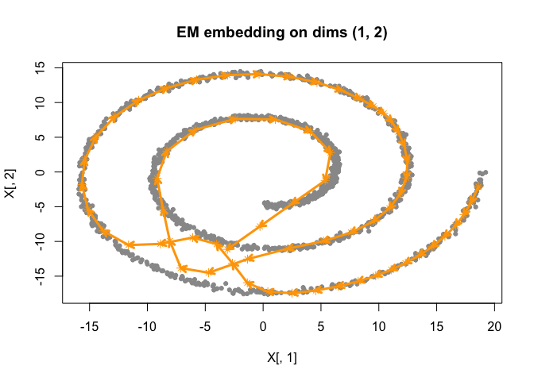

The goal of smoothEMr is to efficiently implement the SmoothEM algorithm for various GMRF priors, using different initialization strategies.
Installation
You can install the development version of smoothEMr like so:
pak::pak("AgueroZZ/smoothEMr")Example
This is a basic example which shows you how to solve a common problem:
library(smoothEMr)We will simulate some data from a spiral embedded in 2D space, and then fit a smoothEM model to it.
simulate_swiss_roll_1d_2d <- function(n = 800,
t_range = c(1.5 * pi, 6 * pi),
sigma = 0.15, # can be scalar or length-2
seed = 1) {
stopifnot(length(t_range) == 2)
stopifnot(length(sigma) == 1 || length(sigma) == 2)
set.seed(seed)
# 1D parameter
t <- runif(n, min = t_range[1], max = t_range[2])
# true 2D "swiss roll" (spiral)
x_true <- t * cos(t)
y_true <- t * sin(t)
# noise
if (length(sigma) == 1) sigma <- rep(sigma, 2)
x_obs <- x_true + rnorm(n, 0, sigma[1])
y_obs <- y_true + rnorm(n, 0, sigma[2])
list(
t = t,
truth = data.frame(x = x_true, y = y_true),
obs = data.frame(x = x_obs, y = y_obs)
)
}
sim <- simulate_swiss_roll_1d_2d(n = 1500, sigma = 0.2, seed = 123)
plot(sim$obs$x, sim$obs$y, pch = 16, cex = 0.35, col = "grey80",
xlab = "x", ylab = "y", main = "Noisy 2D swiss-roll (spiral)")
pal <- colorRampPalette(c("navy", "cyan", "yellow", "red"))(256)
t_scaled <- (sim$t - min(sim$t)) / (max(sim$t) - min(sim$t)) # in [0,1]
col_t <- pal[pmax(1, pmin(256, 1 + floor(255 * t_scaled)))]
points(sim$truth$x, sim$truth$y, pch = 16, cex = 0.25, col = col_t)
Now we fit a smoothEM model to the noisy observations.
# initialize using tSNE
fit <- initialize_smoothEM(X = as.matrix(sim$obs), method = "tSNE", rw_q = 2)
# run 10 iterations of smoothEM
fit <- fit |>
do_smoothEM(iter = 10)
# plot results
plot(fit)
plot(fit, plot_type = "elbo")
We could also try other initialization methods, such as PCA or Fiedler vector initialization.
fit_pca <- initialize_smoothEM(X = as.matrix(sim$obs), method = "PCA", rw_q = 2) |>
do_smoothEM(iter = 50)
plot(fit_pca)
fit_fiedler <- initialize_smoothEM(X = as.matrix(sim$obs), method = "fiedler", rw_q = 2) |>
do_smoothEM(iter = 50)
plot(fit_fiedler)
To automatically select the best initialization method, we can use:
best <- optimize_initial(
as.matrix(sim$obs),
num_iter = 5,
num_cores = 6,
m_max = 6,
two_panel = FALSE,
plot = TRUE
)

best_fit <- best |>
do_smoothEM(iter = 50)
plot(best_fit)
If we choose a different choice of num_iter, we could end up with a different optimal initialization:
best_2 <- optimize_initial(
as.matrix(sim$obs),
num_iter = 30,
num_cores = 6,
m_max = 6,
two_panel = FALSE,
plot = TRUE
)
